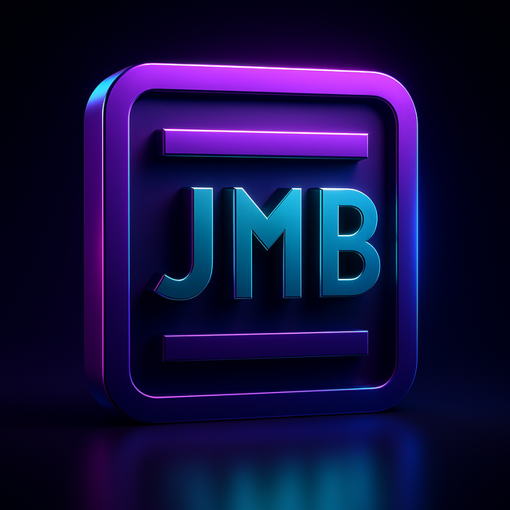

Not connected.
Tap Connect and pick your controller (“JMB one #ID-XXXX”).
Chrome/Edge only — on iPhone use the Bluefy browser. Bluetooth on.
Browse every tab with example data — no controller needed.
Nothing you tap is sent anywhere.

DEMO — example data, not a live controller.
Live DMX in control
is driving the outputs — manual colour, dimmer
and effects here are overridden until the signal stops.
RGB 100% · FX speed 50% · dimmer 0%
Hue/Sat and Kelvin are two ways of choosing — the last
column you touch wins. ΔUV tints green (+) or magenta (−). Applies as
manual colour to the selected ports.
Recall crossfades to the scene over the fade seconds
(0 = snap), always over that time from any state. Effects fade out (and
in) through a dip rather than snapping. Tap a scene's name to rename it.
Scenes live in this phone's browser.
DMX signal
no signal
—fps
—slots
—start code
—last packet
—ASC pkts
—errors
Universe analyser
Universe
Each DMX channel, numbered, showing its
live level — tap one for its patch, captured range and change count.
Flicker finder
Arm it, then every
channel-value change on the wire is logged here — the 2am ghost-flicker
catcher. Survives leaving this tab.
RDM universe
Discover and edit every RDM fixture on the
thru line — address, personality, label, identify and sensors, like a
RDM tester. Scanning takes over the output line while active.
Port bus
Everything: ID, curve, apply mode, all port patch +
looks + effects, and this phone's scenes — one shareable file.
on screens, BLE name (next boot), RDM label
how base addresses fan out
s
keep last look after DMX loss · 0 = forever
—
Link pairs with a transmitter that's in linking mode
(e.g. Aurora); Unlink forgets it. Status is data-truth: "linked — no data"
means paired but the transmitter isn't sending.
—
receive sACN / Art-Net over Wi-Fi
match the console's output universe
A lighting console (or an Art-Net node) on the same Wi-Fi
router streams the universe here — no DMX cable to the fixtures. Wired DMX
still works and out-prioritises the network on a tie.
dim a hot port instead of tripping
Thermal foldback eases a port down over the last 10°C
before its trip so it rides through instead of hard-latching.
Sets a look on this unit and every armed unit down
the DMX line. Arm each downstream unit here (or on its panel: Setup →
Chain Listen) — one baton per arming, auto-disarms after it fires.
Deploy from the first controller in the chain.
The panel's Test menu, remotely: Fade = smooth
rainbow sweep, Step RGBW = full-drive R→G→B→White snap steps.
Runs on all ports and overrides every source —
including live DMX — until switched Off.
BPM
Tap 4+ times in time with the music, or
type a BPM. 128 = the designed tempo. Beat effects (Party, Club, Pulse)
follow it rig-wide, and the ports' Speed wheels move with it.
Spread offsets each port in time so effects sweep across
the rig as a wave.
—
Update the controller over Bluetooth — pick your
build's
firmware.bin. Keep the app open and the phone unlocked
until it finishes; the controller reboots into the new firmware itself.Flash strobes this controller's screen “HERE” for
3s (outputs untouched) — tap it after connecting to check you're on
the right unit.
The Bluetooth name is what you see when connecting.
It changes at the controller's next restart.
Documentation
The full user manual and DMX channel chart. Bundled with
the app — they open even with no internet, once the app has loaded once.